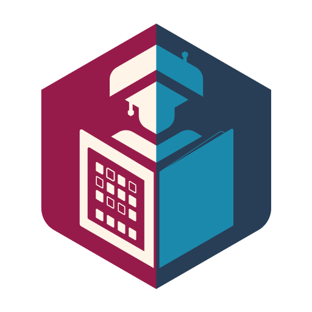
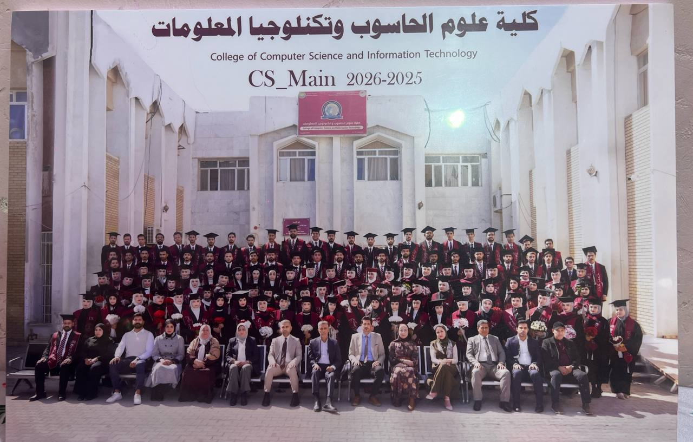
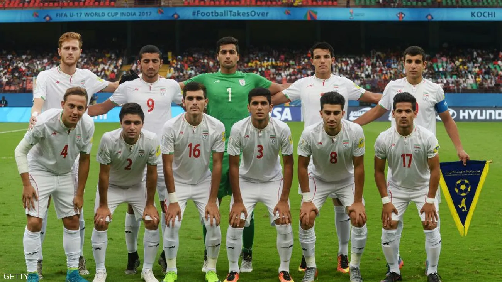
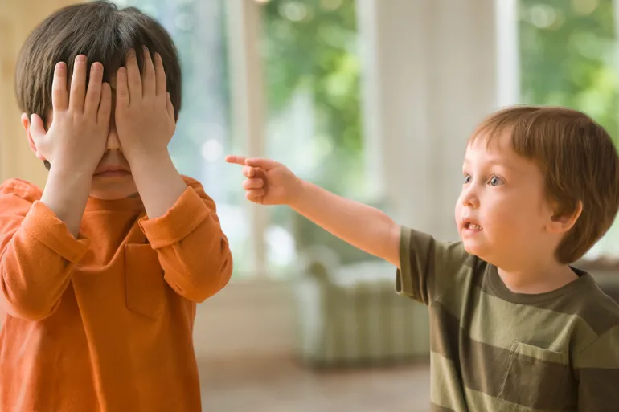
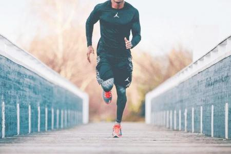
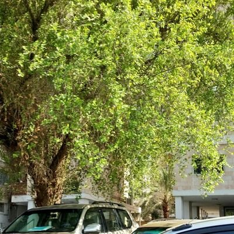

هيبك
هيبك يعود من جديد ليشعل الاجواء ويجعل الطبة يتسائلون عن مستقبل هيبك؟

هيبك يعود من جديد ليشعل الاجواء ويجعل الطبة يتسائلون عن مستقبل هيبك؟

طلبة كلية علوم الحاسوب ينهون الموسم بصورة تذكارية مع الدكتور غيهب

احد الطلبة يلتقط صورة لتخرج زملائه ويقول بلسان طلبة الكلية سنشتاق لكم

العراق يفاجئ الجميع ويتعادل ايجابيا مع المرشح لكاس لعالم المنتخب الاسباني

مبارة محتملة لايران وامريكا
بسبب خطا الكتروني قررت فيف الغاء التذاكر المجانية للمونديال

يؤدي الضرب إلى تغييرات سلبية خطيرة ومثبتة علمياً في نمو دماغ الطفل، حيث يحفز استجابات عصبية ترتبط بالتوتر الشديد اضغط هنا.
قد ينسى الطفل سبب الضربة، لكنه لا ينسى الشعور بالخوف والإهانة الذي رافقها. تشير دراسات نفسية وتربوية عديدة إلى أن الضرب لا يُعلّم الانضباط الحقيقي، بل قد يزرع القلق وضعف الثقة بالنفس ويؤثر في النمو العاطفي والسلوكي للطفل.
قبل ان ترفع يدك على طفلا تذكر انه امانة من الاله لنا , فارحم من هو اضعف منك يرحمك من في السماء

كشف بحث حديث أن ممارسة النشاط البدني بانتظام يساهم في خفض خطر الوفاة المبكرة بنسبة تصل إلى 40%.
أن زيادة الخطوات اليومية وحركة الجسم تخفف من المخاطر الصحية المرتبطة بالجلوس لفترات طويلة. ومع ذلك، أكد الباحثون أن النشاط البدني لا يعوض أو يلغي تماماً الأضرار الناجمة عن الخمول المفرط.
أظهرت دراسات حديثة نُشرت في Nature Communications فعالية التمارين المتقطعة عالية الكثافة (HIIT) في تقليل دهون البطن وتحسين وظائف المناعة بشكل يفوق التمارين المعتدلة. كما تشير النتائج إلى أهمية توقيت التمارين المسائية لتفادي اضطرابات النوم.

تُعد شجرة السدر من أفضل الأشجار الملائمة لمناخ البصرة، لقدرتها العالية على تحمل الحرارة الشديدة والجفاف، إضافة إلى فوائدها البيئية والغذائية المتعددة.
تتميز محافظة البصرة بصيف طويل شديد الحرارة ودرجات حرارة قد تتجاوز 50 درجة مئوية، لذلك تحتاج الأشجار المزروعة فيها إلى قدرة عالية على تحمل الظروف المناخية القاسية. وتُعتبر شجرة السدر من أفضل الخيارات، إذ تتحمل الحرارة والجفاف وملوحة التربة أكثر من كثير من الأشجار الأخرى. كما توفر ظلاً جيداً وتُنتج ثمار النبق التي تحتوي على عناصر غذائية مفيدة. ومن فوائد شجرة السدر: توفير الظل وتقليل حرارة البيئة المحيطة. مقاومة الجفاف وقلة الحاجة إلى الري المتكرر. إنتاج ثمار صالحة للأكل. جذب النحل والمساهمة في إنتاج العسل.